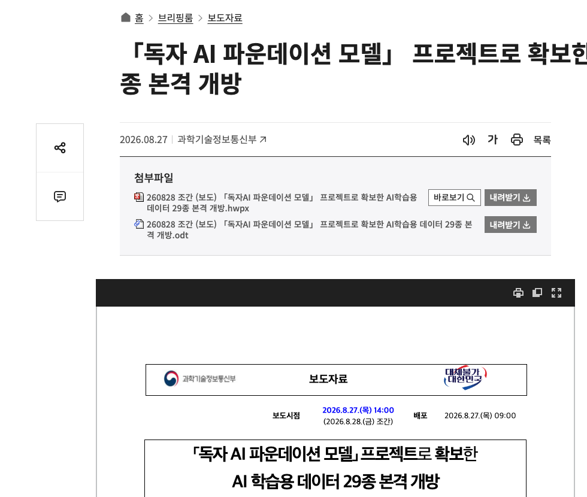
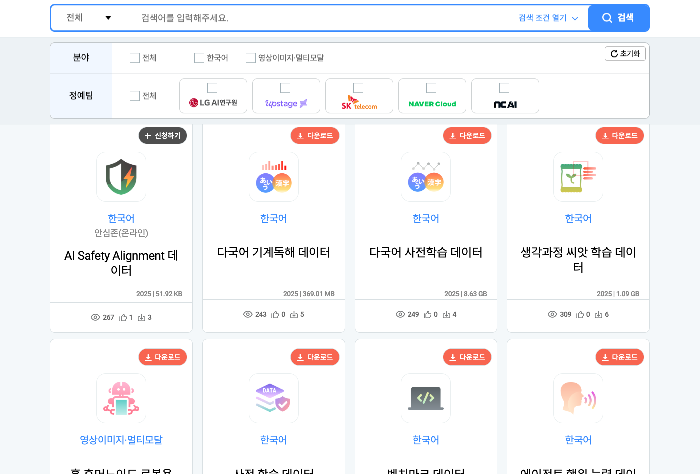
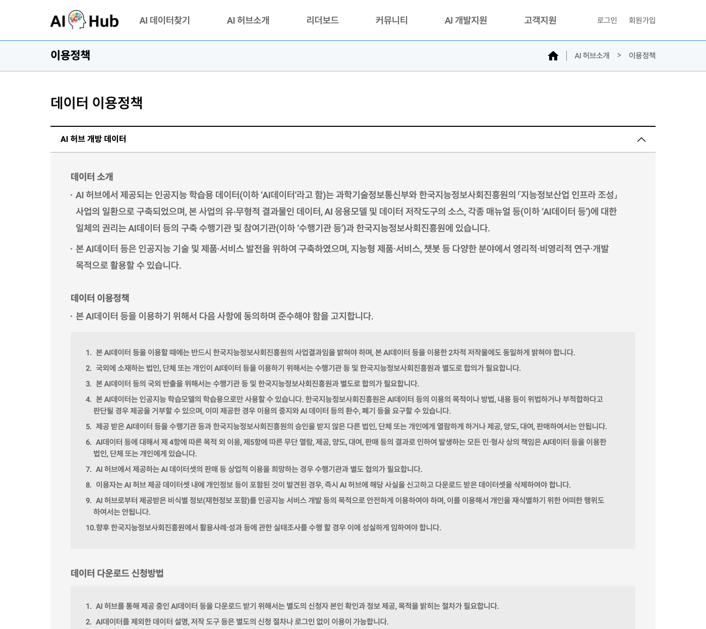

Executive Summary
On 27 August 2026 Korea's Ministry of Science and ICT and the National Information Society Agency (NIA) opened 29 training datasets to the public. The five elite teams of the government's Sovereign AI Foundation Model project had built them with public money, and any Korean national could now download them free of charge. Open the portal, though, and the listing holds 22 items. So we set the announcement record and the portal record side by side, field by field.
The 29 and the 22 turn out to agree. The annex to the press release split each dataset by format and counted 29 rows; the portal registers datasets whole and counts 22. All five teams reconcile exactly. The trouble sits somewhere else. Where the two official records describe the same dataset, they give different counts, different sizes and different formats. A speech dataset drawn from public-service call centres carries "3,434 hours" in the portal's headline field, while the statistics further down that same page report 514 hours of audio. The 3,434 is not a duration. It is the number of transcript files.
An open dataset does not arrive as a total. It arrives as items, and the conditions differ item by item. Almost all of the volume sits in two video datasets, while the traffic goes to the small text files at the other end of the list. Two safety datasets carry a different button. And nowhere across the 22 is there a statement of what you may use them for. Whoever takes delivery has to count it out by hand, every time.
82.8%
Share of volume in two video datasets
Two NAVER Cloud items out of 11,075.6 GiB in total. The single largest is 70.9% on its own
29 rows → 22 sets
Rows in the annex against entries on the portal
A difference in how each record slices by format. No dataset is missing
3,434 → 514
Stated against actual hours in the call-centre speech data
The headline field wrote 3,434 transcript files as "3,434 hours"
0
Datasets that state their terms of use
None of the 22 detail pages carries a licence or permissions field
The data outlives the teams that lost
Korea's Sovereign AI Foundation Model project picked five domestic consortia, called elite teams in the ministry's own English, gave them public money to build large home-grown models, and thins the field at each stage evaluation. The data that the Ministry of Science and ICT and NIA opened on 27 August 2026 is what those five teams produced in the course of the first stage evaluation. By the day of the announcement, two of the five had already left the programme.

Seoul Economic Daily reported that NAVER Cloud and NC AI were cut at a later stage evaluation and that their data still fell under the mandatory opening requirement. The press release itself does not say this anywhere in its body. Confirming it is easy enough all the same. Both teams appear in the annex table of the release and in the portal listing, exactly as the surviving teams do. Twelve of the 22 registered datasets belong to those two teams, and they account for 83.6% of the volume opened. The output of the side that lost the competition does not disappear; it stays at the counter.
It stays because the programme was designed that way. Here is how the release states the basis for the opening, in our translation from the Korean.
"Under the participation conditions in the public notice for the Sovereign AI Foundation Model programme, at least 50% of the data secured through the data construction and processing budget had to be opened. Against that requirement, NAVER Cloud, Upstage, SK Telecom and NC AI decided to open the whole of the data that had passed quality verification and related checks. LG AI Research decided to comply with the mandatory opening volume (50% or more) and to select the data for release statistically."
The line most often misread is the one about LG AI Research. Report it as "opened just over half, as the rules require" and it sounds as though a rule held the company back. But the word in the original is mandatory opening volume, and 50% is a floor, not a ceiling. Four teams handed over everything that cleared verification. LG AI Research met the floor by taking a sample at fixed intervals from each dataset, and the release says the Telecommunications Technology Association (TTA) checked that selection. What share was actually opened cannot be worked out. The annex has a column for volume opened and no column for the volume built.
Verification fell to NIA and TTA. Once the first stage evaluation closed, the two bodies took delivery of everything each elite team had built with its construction and processing budget, ran quality verification alongside checks for personal information and harmful content, and stripped out data carrying licence restrictions. The 22 items at the counter are therefore not everything the teams made. They are what came through three filters.
The money behind the data was never a single pot. An August 2025 report on the final selection of the five elite teams sets out the government's data support in three separate strands. The "15 billion won data construction and processing budget for 2025" cited in the opening announcement appears to be the per-team strand; the other two sit on their own budget lines.
| Support strand | Size | Character |
|---|---|---|
| Joint data purchasing | 10 billion won | Government buys and processes what the teams request in common |
| Broadcast video training data | 20 billion won | A dedicated line for high-quality broadcast footage |
| Per-team dataset construction | 2.8 billion won per team | Each team builds to its own model development strategy |
Source: Byline Network, "Five elite teams chosen for the Sovereign AI Foundation Model programme" (4 August 2025). The public notice puts the per-team strand in a range of 2.8 to 4.0 billion won a year and the confirmed figure came in at the floor. Who administers the 20 billion won broadcast video line is not identified in any published document. Nothing supports reading a causal line between this budget item and the concentration of video volume discussed later.
A quantitative clause requiring that a fixed share of publicly funded training data be released is unusual. Within what published material shows, Japan's GENIAC documents carry no obligation to release training data, and neither IndiaAI nor Singapore's SEA-LION has such a clause. Europe's OpenEuroLLM builds a requirement into its programme structure that candidate data be catalogued openly. We did not read every country's call documents in the original, so "Korea is the only one" is not a claim we can make. What stands out is the direction of travel. Europe and India assemble data centrally and hand it to the teams; Korea makes the teams hand out what they built. That the output of an eliminated team stays at the counter is a consequence of that design.
On the same 27 August, the government also decided to bring forward the opening of 100 high-value public datasets. Our earlier report on that decision followed the flow running from government to the elite teams. This one follows the flow coming back from the elite teams to the public.
Twenty-nine and twenty-two were the same list
The announcement said 29. Open the portal and count, and you get 22. Querying AI Hub's Sovereign AI Model Data menu on 29 August 2026 returned 22 registered datasets, serial numbers 71890 through 71913. That is the listing on day two of the opening. Where did the other seven go?

The answer was in an attachment. Annex 1 to the ministry's press release, titled "Status of data construction and use by elite team, and the opening plan," is a table of five columns: team · dataset name · format · volume opened · size. Count the rows and you get exactly 29. Count the distinct dataset names written inside them and you get exactly 22. The government's unit is a row, a dataset sliced into video, text, speech or image; the portal's unit is the dataset itself.
The correspondence holds not only in the totals but team by team. Only the two right-hand columns matter here. The count of distinct datasets in the annex and the count registered on the portal agree for all five teams.
| Elite team | Rows in Annex 1 | Distinct dataset names | Registered on AI Hub |
|---|---|---|---|
| NAVER Cloud | 6 | 2 | 2 |
| Upstage | 5 | 5 | 5 |
| SK Telecom | 6 | 4 | 4 |
| NC AI | 10 | 10 | 10 |
| LG AI Research | 2 | 1 | 1 |
| Total | 29 | 22 | 22 |
The seven come from five datasets. NAVER Cloud's public video and broadcast video each break into three rows, one for video, one for text and one for speech, and SK Telecom's two LMM datasets and LG AI Research's Scene Understanding dataset each break into two. Those five occupy twelve rows between them; the remaining seventeen datasets take one row apiece. Twelve folding into five is where the seven go.
▲ How the 29 rows of Annex 1 relate to the 22 entries on AI Hub | Source: Annex 1 to the Ministry of Science and ICT press release; AI Hub Sovereign AI Model Data listing (queried 29 August 2026)
Open the annex and the figures quoted in the body of the release reproduce on the spot. NAVER Cloud's "15.5 million items of text" is the sum of the text rows of its two video datasets: 9 million plus 6.5 million lands exactly. The "12 million speech question-and-answer items" is the same arithmetic over two rows, and Upstage's "500,000 items of post-training data" is four rows adding to 502,084. The announced numbers were not loose.
What remains is a difference of one. The total printed in the table is 35,444,173, while adding the volume-opened figures across the 29 rows by hand gives 35,444,172. Open the original press release file and that total cell turns out to be a formula summing the twenty-nine cells of the volume-opened column. One cell in that column does not hold a count. Upstage's pre-training data has its volume opened written as "1 trillion tokens." If the formula pulled only the leading 1 out of that cell as a number, then the sum of the remaining twenty-eight cells plus one matches the printed total exactly. A cell counting tokens is sitting inside a count of items, worth one.
The same cell also carries the value that formula last produced: 35,531,561. That is 87,388 away from the printed figure. Either the table reached its present form without the calculation being run again, or something was typed over the computed value. Which of the two, the file alone cannot say. One cell across, the size total of "11.3TB" has no formula behind it at all. That figure was typed in.
That closes the 29-against-22 suspicion. The numbers in the annex hold together this well inside their own document. Set the same numbers against the portal's page for the very same dataset and the picture changes.
Two records write the same dataset differently
Each row of the annex gives a dataset name and a volume opened. Each detail page on the portal gives a volume built for the same dataset. Put the two numbers side by side twenty-two times and the items separate into those that reconcile cleanly and those that do not reconcile at all. What makes it harder is that the ones that fail do so in a different way each time.
3.1There is a rule. It is written down nowhere.
Start with the clean side. NC AI's thought-process seed training data is entered in the annex as 55,976 items, and the portal's detail page splits the same dataset into 35,976 items of source data and 20,000 items of labelled data. Add the two and the annex figure appears. The same arithmetic holds for the conversational generative, action-generative, medical AI and multilingual pre-training datasets. Five clean hits is hard to put down to coincidence. The annex column called volume opened is source plus labelled, with metadata added where it exists.
The trouble is that this summing rule appears nowhere. Not in the press release, not in the header of the annex table, not on any page of the portal. A user has to work out for themselves how the two documents connect. The rule only becomes visible after you have checked five items by hand, and the moment it becomes visible you run into an item where it does not hold.
3.2The two video datasets sit outside the rule
For NAVER Cloud's two video datasets the summing rule fails. The annex puts public video at 2.34 million items and broadcast video at 520,000. The portal's source-data figures are 2,790,505 and 530,430. Broadcast video lands close to the source-data total, while public video falls well short of it and sits much nearer the segment clip count of 2,392,396. Two datasets, one team, one format, and the annex figure attaches to a different column of the portal in each case. No single basis explains both.
The unit is a problem in itself. The portal's detail page describes the number it calls source data as "source data (segment and context clips)" in its own words. That is a count of pieces cut from footage at scene boundaries. The sentence in the press release, "2.34 million items of public video," reads like a count of videos. Which reading is right cannot be settled from published material. Only one thing is clear: the two cannot be treated as the same unit.
The divergence is not confined to the video rows. Look at the speech rows of those same two datasets. The annex records 6.42 million on the public video side and 5.58 million on the broadcast side. The portal counts Korean speech question-and-answer pairs at 6,240,886 and 5,761,229 for the same two items. The totals of the two records, 12 million against 12,002,115, are effectively identical. How that total divides between the two datasets is not. What one side gains the other loses, and only the sum survives. Whether the "12 million speech question-and-answer items" in the coverage is accurate, and how much of that 12 million a user can obtain from which dataset, are separate questions. The two records answer the first the same way and the second differently.
3.3The format label does not match the thing
Format is the axis used to expand 22 datasets into 29 rows. On at least one row that axis does not match what is actually there. The annex enters NC AI's AI Safety Alignment data as image, 10,000 items, 11MB. Open the portal's detail page for the same data and the metadata structure table gives its data type as text; the volume built is tallied as 2,540,064 characters and 93,088 eojeol, the word units Korean counts by spacing; and the file size is 21.12MB. Ten thousand items in 11MB works out to 1.1KB each, which is hard to read as image files. Once the basis for dividing by format wobbles, the number 29 wobbles with it.
3.4Sometimes a single page contradicts itself
The easiest case to check is NC AI's citizen-inquiry call speech data. The volume built field near the top of the detail page reads 2025 / 3,434 hours. Scroll a little and the scale of construction on the same page says something else: the speech data runs 514 hours, split 257 hours for the agent and 257 for the caller, and the transcripts come to 3,434 JSON files. The 3,434 was never a duration. It was a file count. The annex counts this item at 6,868, twice 3,434, which is source plus labelled. Anyone who sized this dataset from the header field alone overshoots the actual audio by more than sixfold.

On NC AI's Synthetic & Instruction dataset, one page gives the eojeol count twice and differently. The header field says 721,651,839; the table just below says 106,141,506. The character count is the same in both places, about 4.54 billion, and only the word count diverges. The lower figure also matches the eojeol count of the high-quality multi-turn dataset sitting next to it, digit for digit. There is no basis for asserting how this happened. There is also no way for a user to tell which of the two to believe.
A third case is arithmetic that does not close. The detail table for NC AI's medical AI training data puts the total size of the source data at 29.44GB and then, one line below, gives 36.87GB for the multimedia portion of that same source data. The part exceeds the whole. The total at the foot of the table, about 37.1GB, matches what you get by adding every line except the one labelled total size. On the count side the lines add to 307,842 exactly. What is out of place in this table is a single size cell, and that cell happens to be the one named total.
We gathered the comparison so far in one place. The top three rows are where the rule holds; the five below are where it breaks.
| Dataset | Press release Annex 1 | AI Hub detail page | How it reads |
|---|---|---|---|
| Thought-process seed 71904 |
55,976 items | Source 35,976 + labelled 20,000 | The summing rule lands exactly |
| Multilingual pre-training 71905 |
2,504,351 items | 2,504,351 files | Straight match |
| Medical AI 71909 |
307,842 items / 28.6GB | Total 307,842 items / about 37.1GB | Counts agree, sizes diverge |
| Public video 71912 |
2,340,000 items | Source 2,790,505 (segments 2,392,396) | Matches no column |
| Broadcast video 71913 |
520,000 items | Source 530,430 (segments 381,437) | Nearest a different column than public video |
| Citizen-inquiry call speech 71910 |
6,868 items | Header field "3,434 hours" / speech 514 hours, 3,434 JSON files | A file count written as a duration |
| AI Safety Alignment 71907 |
Image, 10,000 items / 11MB | Text, 10,000 items / 21.12MB | Format and size diverge together |
| Synthetic & Instruction 71903 |
858,960 items / 1.7GB | Source data 24 items / about 5.81GB | Counting an entirely different thing |
Source: Annex 1 to the Ministry of Science and ICT press release; AI Hub detail pages for each dataset (queried 29 August 2026). For 71903 the file size measured from the listing is 1.67 GiB, close to the annex figure and more than three times away from the 5.81GB on the detail page. The neighbouring dataset 71902 has the same shape: the annex figure of 226MB agrees with the 0.22 GiB measured from the listing, and only the detail page says 820MB. LG AI Research's 71899 diverges a little in both directions too. The annex enters 151,952 images and 1,302 text items; the detail page says 152,014 annotations and 1,262 JSON files. Which of the values is correct is not stated anywhere in the published material.
3.5One missing unit label leaves even the direction undecided
The announcement gave the scale of the opening as 11.3TB. Add up the sizes of the 29 annex rows yourself and the provenance of that number shows. Read GB as 1024 cubed and the total is 11.282; read it as 1000 cubed and the total is 11.345. Either reading rounds to 11.3. The 11.3TB was not measured separately. It is the annex rows added together.
Take the file sizes of the 22 items from the portal in bytes, however, and the sum is 11,075.6 GiB. To compare that with 11.3TB you need to know whether the 11.3 means TB or TiB, and that label appears neither in the press release, nor in the annex, nor on any detail page. Read as binary, the measured figure is 4.1% below the announced one. Read as decimal, it is 4.8% above. Whether the measurement comes in over or under the announcement, even the direction is undecided.
The ambiguity is not the press release's alone. The function AI Hub uses to render file sizes on screen mixes the two conventions itself.
function getfileSize(x) {
var s = ['bytes', 'KB', 'MB', 'GB', 'TB', 'PB'];
var e = Math.floor(Math.log(x) / Math.log(1024));
return x != 0 ? (x / Math.pow(1024, e)).toFixed(2) + " " + s[e] : 0;
};
▲ The file size display function embedded in AI Hub dataset pages | It divides by 1024 while labelling the result with the decimal prefixes KB, MB, GB and TB. The practice is widespread, but it does mean that a "GB" on screen is a GiB.
The government record is internally consistent, and the portal record is largely consistent within itself as well. The moment you try to join the two, counts and sizes and formats each show a slightly different face. The distance between someone introduced to training data as a total and someone who has to take delivery of it item by item sits inside these tables.
Two video datasets hold 83% of the 11TB
The total arrives as a single line, "11.3TB." Open it up and it is anything but even. Take the file sizes of the 22 items straight from the portal and add them by team, and NAVER Cloud's two datasets account for 82.8% of the whole. One of them, the public video data, is 70.9% on its own. What the other twenty share out between them is under a fifth.
The traffic runs the other way. Queried on 29 August 2026, day two of the opening, 20 of the 223 downloads had gone to NAVER Cloud's two items. NC AI's ten datasets, which together hold less than 1% of the volume, took 44.5% of the page views. The sample is small and the window is two days, so there is nothing here to say about cause. The shape is clear enough: the side holding the volume and the side drawing the people are opposite ends of the list.
| Elite team | Listed | Size (GiB) | Share of volume | Downloads | Page views |
|---|---|---|---|---|---|
| NAVER Cloud | 2 | 9,174.8 | 82.8% | 20 | 710 |
| Upstage | 5 | 1,644.5 | 14.8% | 84 | 1,668 |
| SK Telecom | 4 | 134.1 | 1.2% | 40 | 1,359 |
| NC AI | 10 | 83.8 | 0.8% | 70 | 3,263 |
| LG AI Research | 1 | 38.4 | 0.3% | 9 | 327 |
| Total | 22 | 11,075.6 | 100% | 223 | 7,327 |
Source: AI Hub Sovereign AI Model Data listing, queried 29 August 2026, two days into the opening. Downloads and page views move over time.
Set the same values out as share of volume against share of downloads and the two bars lie in opposite directions.
▲ Share of volume against share of downloads, by team | Source: AI Hub listing queried 29 August 2026 (n=22, two days after opening). An observation of shape, not evidence for a causal reading.
Double-digit downloads are not a common sight at this counter. Open the four datasets registered in the band immediately below these 22 and you find that fourteen months after their final release in June 2025, downloads still sit between one or two and about forty. These are neighbours in the listing rather than a random sample, so no claim to representativeness holds. It is still fair to say that reaching three digits in two days is, by the standards of this counter, a visible response.
The concentration matters because it is a planning problem. An opening of 11TB tells someone who wants to use this data nothing they need. Drop the two video datasets and the remaining twenty come to around 1,900 GiB in total; drop Upstage's pre-training data as well and the nineteen left fall under 260 GiB. At the other extreme, the largest single item is more than 7 TiB by itself, so merely taking delivery calls for its own storage and bandwidth plan. A total is a number for describing what a programme achieved. It is not the number a user decides what to take with.
Expand the full list of all 22 opened datasets (queried 29 August 2026)
| Team | Dataset | Size | Downloads | Page views |
|---|---|---|---|---|
| NAVER Cloud | Public video data 71912 | 7,854.69 GiB | 5 | 276 |
| NAVER Cloud | Broadcast video data 71913 | 1,320.12 GiB | 15 | 434 |
| Upstage | Pre-training data 71898 | 1,643.68 GiB | 41 | 422 |
| Upstage | Agent action-capability data 71896 | 0.30 GiB | 14 | 337 |
| Upstage | Knowledge and intelligence data 71894 | 0.26 GiB | 14 | 338 |
| Upstage | User-preference data 71895 | 0.22 GiB | 5 | 262 |
| Upstage | Benchmark data 71897 | 2.01 MiB | 10 | 309 |
| SK Telecom | LMM (speech, text) training data 71891 | 126.91 GiB | 11 | 301 |
| SK Telecom | LMM (image, text) training data 71892 | 6.84 GiB | 11 | 305 |
| SK Telecom | LLM/LAM post-training data 71890 | 0.32 GiB | 14 | 313 |
| SK Telecom | LLM/LAM red teaming data 71893 | Safe Zone | 4 | 440 |
| NC AI | Citizen-inquiry call speech data 71910 | 35.28 GiB | 9 | 381 |
| NC AI | Medical AI training data 71909 | 26.00 GiB | 7 | 344 |
| NC AI | Multilingual pre-training data 71905 | 8.63 GiB | 4 | 248 |
| NC AI | Conversational generative AI training data 71908 | 5.33 GiB | 5 | 280 |
| NC AI | Action-generative AI training data 71911 | 5.24 GiB | 8 | 300 |
| NC AI | Synthetic & Instruction dataset 71903 | 1.67 GiB | 9 | 531 |
| NC AI | Thought-process seed training data 71904 | 1.09 GiB | 6 | 308 |
| NC AI | Multilingual machine reading comprehension data 71906 | 0.36 GiB | 5 | 242 |
| NC AI | High-quality multi-turn dataset 71902 | 0.22 GiB | 14 | 362 |
| NC AI | AI Safety Alignment data 71907 | Safe Zone | 3 | 267 |
| LG AI Research | Scene Understanding dataset for home humanoid robots 71899 | 38.42 GiB | 9 | 327 |
The two Safe Zone items do carry file size values in the listing, 187KiB and 52KiB respectively, which are a long way from the 40MB and 11MB the annex records for the same two items. Since nothing on the page explains what was measured, they are shown here as Safe Zone only.
And at the right-hand edge of the listing sit two buttons that do not look like the other twenty.
Two of the 22 cannot be downloaded
Twenty of the 22 items carry a Download button. The other two carry Apply. They are SK Telecom's AI Foundation Model (LLM/LAM) red teaming data and NC AI's AI Safety Alignment data, both built to make models safer, and both, as it happens, exactly 10,000 items in size.

Those two have to go through the Safe Zone (안심존), AI Hub's formal arrangement for working on data without downloading it. The portal splits it in two: an offline Safe Zone reachable only from a designated physical site, and an online Safe Zone reachable over a secure network from home or the office. Both of these items are marked Safe Zone (online). There is nowhere to travel to. There is a person whose approval you need. The procedure the portal describes runs from connection to a request for use, submission of documents, review, approval, analysis, and finally a request to take the analysis model out. What separates these two from the other twenty is who reviews and who approves. In both cases it is the building institution, which is to say the company that made the data. The list of documents to submit includes the notice of an institutional review board decision, an approved research plan, proof of affiliation, an application to use, and a security undertaking.
This guidance block should not be read as the conditions on these two items, though. The same block hangs at the same address on dataset pages that are not Safe Zone items at all, and it is headed "Guide to the opening of health and medical data." It is an element inserted site-wide. What documents these two datasets actually require cannot be established from the detail pages.
Scroll further and guides for the opening of defence data and broadcast video data sit alongside the health and medical one. The structure gives each family of data its own guide. There is no guide in that list for the Sovereign AI Model Data family, which is where these 22 items sit.
The nationality restriction is the same kind of case. Near the top of both detail pages runs the line "※ Only Korean nationals may apply for this data." It looks like a Safe Zone condition. Open all 22 detail pages and check, and the line is on every one of the twenty-two. Open a dataset page with no connection to this opening whatsoever and the same sentence sits in the same place. The nationality restriction is not a special condition on two items. It is a condition on the whole counter.
So what is actually different? The button, the human review, and the fact that the review is run by the people who made the data. Set that alongside how safety and red teaming datasets are commonly distributed internationally and the directions part company. We queried each repository's public information directly.
| Dataset | Distributed via | Access control | Licence |
|---|---|---|---|
| Anthropic red team transcripts | Hugging Face | None | MIT |
| BeaverTails | Hugging Face | None | CC BY-NC 4.0 |
| Do-Not-Answer | Hugging Face · GitHub | None | Apache-2.0 |
| AdvBench | Public GitHub repository | None | MIT |
| HarmBench | Public GitHub repository | None | MIT |
| Red teaming data 71893 | AI Hub Safe Zone | Application, documents, review; approval by the building institution | Not stated |
| AI Safety Alignment 71907 | AI Hub Safe Zone | Application, documents, review; approval by the building institution | Not stated |
Source: public information on Hugging Face and GitHub queried 29 August 2026; AI Hub detail pages. The two Hugging Face mirrors of AdvBench and HarmBench grant access automatically on agreement to terms, so no person reviews them. Within what we checked, we found no case where the reviewer is the producer of the data.
Putting access controls on data containing harmful language and attack scenarios can be a legitimate choice in itself. That international practice runs open does not make Korea's choice wrong. What is worth saying is narrower: in an asset class where open distribution is the norm, Korea went the other way, and the reasoning behind that judgement was not published. The press release says only that "some data can be used after a separate application through the website (Safe Zone)," and never identifies which data or why. That both items are safety datasets is something you learn by counting the counter yourself.
The two are also strangers to each other. They start from different material. SK Telecom's red teaming data records in its provenance field that attack methods were designed from model vulnerability reports, that people wrote the prompts, and that responses were generated with the company's own model and with open-source models. NC AI's AI Safety Alignment data says in the same field that it is a Korean translation of material used in safety alignment research papers. What the press release introduced as "a Korean-style dataset reflecting the universal values of Korean society" is the first of these. The second arrived by translation.
Nor do they share a scheme for dividing harm. Two safety datasets of 10,000 items each, posted at the same counter on the same day under the same controls, and their lists of what counts as a risk do not overlap.
| Red teaming data (71893) | AI Safety Alignment (71907) |
|---|---|
| Harmful content, 2,000 items (20%) | Serious crime and harm, 4,000 items (40%) |
| Unfair expression, 2,000 items (20%) | Harmful expression and content, 3,000 items (30%) |
| Harm from false information, 2,000 items (20%) | Cybercrime, 2,628 items (26.28%) |
| Information and safety violations, 2,000 items (20%) | Infringement of rights, 372 items (3.72%) |
| Malicious use, 2,000 items (20%) | — |
| Five categories, exactly even | Four categories, weighted to one side |
Source: the data statistics section of AI Hub detail pages 71893 and 71907 (queried 29 August 2026). The even split on 71893 looks like a design allocation rather than a natural distribution, but the page offers no explanation, so we do not assert it.
Set against the effort international benchmarks such as HarmBench and Do-Not-Answer have put into building a shared taxonomy of harm, two datasets out of one programme dividing harm by different rulers is hard to pass over. Neither taxonomy is being called the correct one. It only means that whoever wants to train on both has to stitch the two schemes together by hand.
Free does not settle the terms
The press release contains exactly one sentence about terms of use: "Any Korean national, including domestic companies, researchers and students, may download and make use of this free of charge through AI Hub." Free and usable sit next to each other there, but what it may be used for, and how far, is not in that sentence.
So we opened the dataset pages. Going through all 22 detail pages looking for anything corresponding to copyright, permission to use or licence turned up not one. The press release has no such field either, and neither do the five columns of the annex table. Nowhere in this opening are terms recorded dataset by dataset. Taking delivery is not itself difficult. Register, verify by mobile phone, apply, and approval is automatic; the download follows.
The awkward part is that this is the only field left empty. Further down the same pages, the implementing organisation and participating organisations that built the data are named on all twenty-two, along with the name, telephone number and email address of the person responsible. Who made it and whom to ask is knowable down to the individual. What you may use it for is not there in any form. This is not a field that was hard to fill. It is a field that was never provided.
That is not to say no conditions exist. AI Hub maintains a site-level Data Usage Policy, and its section on AI Hub Open Data is fairly specific.

- All rights in the data rest with the implementing and participating organisations that built it, together with NIA. Public funding does not make the government the rights holder.
- It may be used for research and development purposes, commercial or non-commercial.
- Except that "this AI data may be used only for the training of artificial intelligence models."
- For a corporation, organisation or individual located outside Korea to use it requires a separate agreement with the implementing organisation and NIA, and taking it out of the country is a matter for separate agreement as well.
- It may not be shown to third parties, nor provided, transferred, lent or sold to them, without approval.
- Commercial use such as selling the dataset on requires separate discussion with the implementing organisation.
- Where NIA judges the purpose or method of use unsuitable, it may refuse to supply the data or demand the return or destruction of data already supplied.
- Use must acknowledge the data as the result of an NIA project, and derivative works must carry the same acknowledgment.
Whether those clauses apply to these 22 items at all is not clear. They belong to the section on AI Hub Open Data, while this opening sits under a separate menu called Sovereign AI Model Data. The usage policy page is built to give each family of data its own section. KETI's intelligent information flagship data, airport anomalous-behaviour CCTV, KAIST's audiobooks and the AI online competition data each have one, and there are ten such sections in all. None of them is for Sovereign AI Model Data. It is the same shape as the missing Safe Zone guide in the previous section, where every other family had one.
More awkward is the scope that the first section states for itself. The AI Hub Open Data section pins the AI data it speaks of to material "built as part of the Intelligent Information Industry Infrastructure Development project of the Ministry of Science and ICT and the National Information Society Agency." These 22 items did not come from that project. They came from the Sovereign AI Foundation Model project. And the end of that same section adds a caveat: "Please note that AI data for which the National Information Society Agency is not the rights holder must follow that institution's own usage policy and download procedures, and that this is unrelated to AI Hub." Which policy governs these 22 items is not something published material settles.
The gap bites in practice straight away. Whether the training-only clause applies determines whether using the data for evaluation or benchmarking is permitted, and whether the overseas transfer clause applies determines whether a foreign subsidiary, or training on infrastructure in an overseas region, is possible. If any of that is planned, it is worth settling before you take delivery.
An empty terms field is not a peculiarity of this counter. Croissant, the MLCommons format establishing itself as the machine-readable standard for dataset metadata, puts license in its recommended minimum fields alongside name, description and URL. An international standard has already ruled that a licence is a field that ought to be there. Yet a study auditing more than 1,800 text datasets reported license omission of over 70% on widely used hosting sites and error rates of over 50%. That figure is an aggregate across everything audited and cannot be transferred to any particular counter. It does tell you what the default looks like.
If an empty label is the default, that gap has to be filled by the receiving side's own procedure. That attaching a label and getting the label right are jobs at different levels is something our earlier report on the cost of auditing open dataset licences already covered. This case shows there is one more level above that. Even where the fields are filled, whether the values agree with each other is a separate question.
Where did this data come from?
The terms field is empty, but the data provenance field is filled on all 22, and filled in some detail. Read it item by item and what this opening was made from comes into view.
One half was gathered first-hand. The citizen-inquiry call speech was collected in-house. The data for home humanoid robots was shot in real domestic settings, Korean apartments and low-rise housing. The action-generative data was captured straight off PC and Mac screens. The medical AI data records that surveys, check-ups and body measurements relating to frailty were collected in-house.
The other half was worked up from data that was already public. The multilingual pre-training data gives its sources as public corpora including Japanese and Chinese Wikipedia; the conversational generative data uses COCO and OpenImage as raw material; the benchmark data names Arena-Hard, BFCL and TAU2. NC AI's multi-turn and Synthetic datasets enumerate public Hugging Face datasets, and that list runs through names such as nvidia/Nemotron-4-340B-Instruct, HelpSteer2, argilla/magpie-ultra, allenai/tulu-3-sft-mixture and open-r1/OpenR1-Math-220k. Synthetic data produced by other models has come into the training data of a publicly funded programme and gone back out through a public counter.
Reworking public data is standard practice in this field, and not the thing to complain about. What stands out is the asymmetry. The provenance field names the raw material down to the dataset, and no field tells you how the conditions attached to that raw material carry through to what was made from it. You can learn the names of the ingredients. You cannot learn their terms.
One item went around the counter and came back to where it started. NC AI's thought-process seed training data gives its source as "curriculum data provided by NIA AI Hub" and lists five of them by name: mathematics problem generation, automatic mathematics solving, mathematics curriculum solution processes, Korean-language passage-type questions, and stage-by-stage curriculum data. All of them were already on AI Hub, with no connection to this programme. At least one of these 22 items was built from AI Hub data and has returned to AI Hub.
This should not be filed with duplicate construction. Cases where central and local government built the same data separately are duplication between institutions; this is raw material recirculating into a processed product inside a single counter. The latter looks more like open data doing what it is for. What does remain is that the recirculation is visible only if you read the provenance field. The risk in a loop where synthetic data becomes training data again is something we have taken up separately.
The largest text dataset, Upstage's pre-training data, writes down the scale of its own cleaning. A synthetic data generation pipeline using the company's own model, together with three stages of filtering, first assembled a dataset on the order of 19.7 trillion tokens; named entity recognition, personal information detectors and pattern matching then left about 1 trillion. In published large-scale corpora the share surviving the filters usually lands somewhere near 10% of the original. RefinedWeb, built in the course of the Falcon work, retained 11.67% of CommonCrawl documents. The two figures cannot be set side by side and divided. The 19.7 trillion has already been through one round of refinement, and the 1 trillion is the amount chosen for release, so refinement yield and release selection are mixed into a single number. The direction is the same regardless. The substance of building pre-training data lies on the filtering side, not the gathering side.
In the token distribution table on the same page, all three of the divisions labelled Korean add up to 1.2% of the whole. The rest is English-family. Large pre-training corpora leaning English is unremarkable, and this dataset's own description names "resolving data imbalance" as a goal. Reading that goal alongside that distribution is left to the user.
That table also has two divisions with "synthetic" in their names. Add the English and the Korean sides and they come to 118.5 billion tokens, 10.9% of what was published. One piece in ten is another model's writing. And this figure was written on the page by the supplier itself. NC AI's two datasets, seen earlier, likewise list by name the synthetic datasets used as raw material. Reasoning about a loop in which synthetic data becomes training data again means first being able to count where it is mixed in and how much of it there is, and at this counter the provenance field and the distribution table are filled enough to do that work. Why physical AI data shot in Korean homes is worth having reads in the same context.
Why This Matters to Pebblous
What Pebblous does when a dataset arrives is simple. Open the thing itself and count it, reconcile the units, and leave the result in a ledger. The certificate DataClinic attaches to training data is that output. This opening is a domestic case of running that same procedure not against a dataset but against a public counter.
The announcement arrived as three totals: 29 kinds, 35.44 million items, 11.3TB. And those totals were accurate inside their own document. What someone assembling a corpus needs, though, is not a total but the unit, the size and the terms of each individual item, and that is where the two official records parted. Verifying a total and verifying an item are different jobs.
What this comparison turned up translates directly into the defect list we see in training data all the time. Unit mismatch, where items and hours and tokens and eojeol share one table. Undisclosed aggregation rules, where some entries add source and labelled together and others report them apart, with the rule written nowhere. Contradiction between fields, where a header writes a file count as a duration and one page gives two different word counts. Suspected cross-contamination, where a figure identical to the neighbouring dataset's turns up. Distribution skew, where one item takes more than 70% of the volume. Metadata omission, where the terms field is absent altogether. Asymmetric access conditions, where twenty items say Download and two say Apply on the same list. When that list comes out of training data we write a certificate. There is no reason to treat a public counter any differently.
Research measuring how complete dataset documentation is has become a strand of its own, and the results are broadly alike: few datasets clear even half of the fields that ought to be filled. But a completeness audit measures form, not truth. Even where the fields are filled, whether the values agree with one another is a separate look. Section 3 above is exactly that case. The cells in the annex were filled and the cells at the counter were filled, and the two disagreed.
Which is why the procedure for putting an open dataset into a corpus falls straight out of the comparison so far. The only material it needs is public pages, and anyone could run it today.
- Count the counter's listing item by item, not the announced figure. A total does not tell you how many items there are.
- Match the announcement record against the counter record field by field. Where they disagree, first settle what each side was counting.
- Check the unit on every item. Numbers in different units are neither added nor divided.
- Look at the distribution. If one or two items hold most of the volume, decide whether you actually need them before anything else.
- Find where the terms of use are written. If they are not on the dataset page, open the common terms and any attached documentation, and if they are still not there, record the absence.
- If there is a foreign entity, an overseas service, redistribution or commercialisation in the plan, settle the clauses first. Checking after delivery is too late.
Metrics for counting how much has been opened are mature. How many kinds were released and how quickly gets measured several ways. What has no name yet is the layer that sits on top. Whether data that was opened arrived in a state anyone can actually use, what to call that condition and how to measure it, has not been settled. If training data built with public money is going to keep arriving at the counter, setting a standard for its acceptance inspection only becomes more necessary as the openings multiply. Pebblous takes opened data and judges whether it arrived in a usable state.
References
Policy and primary documents
- 1.Ministry of Science and ICT / National Information Society Agency (2026). Press release: 29 AI training datasets secured through the Sovereign AI Foundation Model project go fully open. 27 August 2026. In Korean. (Primary source for this article, including Annex 1, "Status of data construction and use by elite team, and the opening plan," a 29-row table.)
- 2.AI Hub. Sovereign AI Model Data listing and the 22 detail pages, serial numbers 71890 to 71913. Queried 29 August 2026. In Korean. (Source for the registered counts, file sizes, downloads and page views, the volume built fields and the data provenance fields.)
- 3.AI Hub. Data Usage Policy. In Korean. (Rights attribution, the training-only limitation, separate agreement for overseas use and transfer, and the prohibition on redistribution, all from the AI Hub Open Data section. There is no section for Sovereign AI Model Data.)
- 4.Ministry of Science and ICT. Public notice for the Sovereign AI Foundation Model project. In Korean. (The split between common and per-team demand in the data support structure. The original wording of the 50% opening clause could not be obtained.)
Press coverage
- 5.IT Daily (2026). Whoever loses the sovereign AI race, the data stays: 1.56 trillion tokens opened. 27 August 2026. In Korean.
- 6.Seoul Economic Daily (2026). Free for agent and robot development: government opens 35.44 million items of AI data. 27 August 2026. In Korean. (Source for NAVER Cloud and NC AI having been cut at a stage evaluation while remaining subject to mandatory opening.)
- 7.iNews24 (2026). Science ministry opens 29 sovereign AI training datasets, 1.56 trillion tokens. 27 August 2026. In Korean. (The NIA and TTA verification sequence.)
- 8.HelloDD (2026). Video, speech and reasoning data too: government releases sovereign AI model data. 27 August 2026. In Korean.
- 9.Asia Today (2026). Data obtained through the sovereign AI project opened on AI Hub. 27 August 2026. In Korean.
- 10.Future Chosun (2026). Government opens 35.44 million items of training data from five AI project companies to the private sector. 28 August 2026. In Korean.
- 11.Byline Network (2025). Five elite teams chosen for the Sovereign AI Foundation Model programme. 4 August 2025. In Korean. (Source for the three-way split of the data support budget.)
Academic
- 12.Gebru, T., Morgenstern, J., Vecchione, B., Vaughan, J. W., Wallach, H., Daumé III, H., & Crawford, K. (2018). Datasheets for Datasets. arXiv:1803.09010. (The uses and distribution sections are what terms of use amount to.)
- 13.Pushkarna, M., Zaldivar, A., & Kjartansson, O. (2022). Data Cards: Purposeful and Transparent Dataset Documentation for Responsible AI. FAccT '22. arXiv:2204.01075.
- 14.Akhtar, M., Benjelloun, O., Conforti, C., et al. / MLCommons (2024). Croissant: A Metadata Format for ML-Ready Datasets. arXiv:2403.19546. (license is among the recommended minimum fields.)
- 15.Longpre, S., Mahari, R., Chen, A., Obeng-Marnu, N., Sileo, D., Brannon, W., Muennighoff, N., et al. (2023). The Data Provenance Initiative: A Large Scale Audit of Dataset Licensing & Attribution in AI. arXiv:2310.16787 / Nature Machine Intelligence (2024). (Audit of more than 1,800 text datasets; license omission of 70%+ and error rates of 50%+, an aggregate across hosting sites that cannot be transferred to any particular counter.)
- 16.Fiandrino, C., et al. (2025). Completeness of Datasets Documentation on ML/AI repositories: an Empirical Investigation. arXiv:2503.13463. (Few datasets exceed 50% documentation completeness.)
- 17.Penedo, G., Malartic, Q., Hesslow, D., et al. (2023). The RefinedWeb Dataset for Falcon LLM. arXiv:2306.01116. (11.67% of CommonCrawl documents survive to the final set.)
- 18.Ganguli, D., Lovitt, L., Kernion, J., et al. (2022). Red Teaming Language Models to Reduce Harms. arXiv:2209.07858. (The red team transcripts in Anthropic/hh-rlhf on Hugging Face, MIT.)
- 19.Ji, J., Liu, M., Dai, J., et al. (2023). BeaverTails: Towards Improved Safety Alignment of LLM via a Human-Preference Dataset. arXiv:2307.04657. (CC BY-NC 4.0, no access control.)
- 20.Wang, Y., Li, H., Han, X., Nakov, P., & Baldwin, T. (2023). Do-Not-Answer: A Dataset for Evaluating Safeguards in LLMs. arXiv:2308.13387. (Apache-2.0.)
- 21.Zou, A., Wang, Z., Carlini, N., et al. (2023). Universal and Transferable Adversarial Attacks on Aligned Language Models. arXiv:2307.15043. (The canonical AdvBench, in a public GitHub repository under MIT.)
- 22.Mazeika, M., Phan, L., Yin, X., et al. (2024). HarmBench: A Standardized Evaluation Framework for Automated Red Teaming and Robust Refusal. arXiv:2402.04249. (An attempt at a shared taxonomy of harm.)
Earlier Pebblous reports
- 23.Pebblous (2026). Korea Pulled 100 Public Datasets Forward a Year. The License Change Was a Different List. 28 August 2026.
- 24.Pebblous (2026). The Government Built the Training Data. Then Other Agencies Built It Again. 17 August 2026.
- 25.Pebblous (2026). Robot Experience Data Can't Be Bought. 20 July 2026.
- 26.Pebblous (2026). The Real Invoice for Free Data. 9 July 2026.
- 27.Pebblous (2026). When AI Eats AI, Human Data Gets More Expensive. 10 June 2026.
- 28.Pebblous (2026). Capital Crosses Borders. Data Doesn't. 5 May 2026.